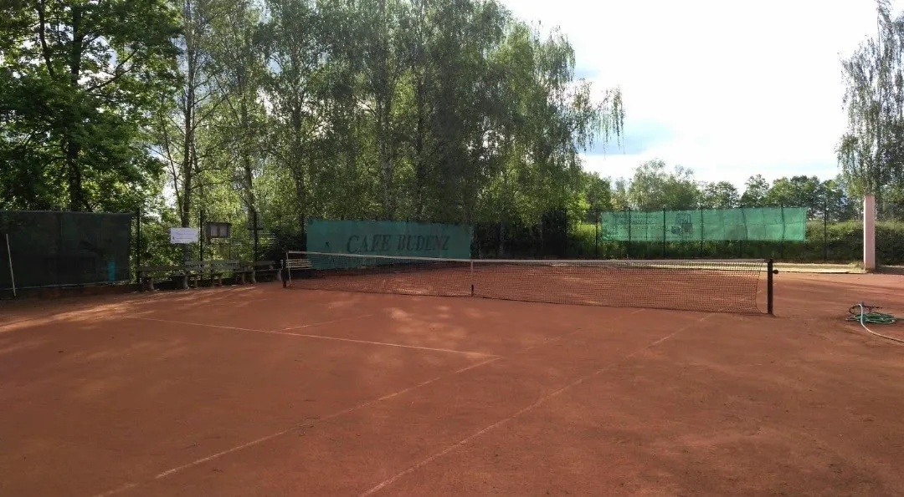
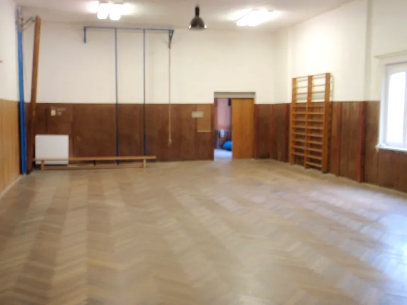
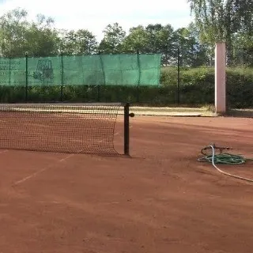
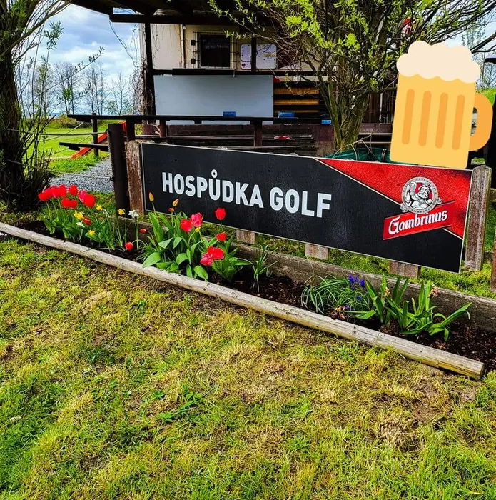

Kurty a tělocvična
v Radčicích
Podívejte se, kdy je volno, a pošlete žádost o rezervaci. Správce ji potvrdí e-mailem i s platebními údaji.
Co si můžete zarezervovat
Dva antukové kurty, kurt s tréninkovou zdí a krytá tělocvična. Každé sportoviště se rezervuje samostatně po celých hodinách.

Tělocvična
- Vstup jen v čisté sálové obuvi.
- Po skončení vraťte nářadí na místo.

Místo pro fotku čerpadla a košťat s krátkým popisem, kde je najdete (doplníme podle Sokola).
Obsazenost a volné termíny
Vyberte sportoviště a klikněte na volnou hodinu. Pro pravidelné tréninky zaškrtněte ve formuláři opakování.
Cvičíme s námi
Termíny pro rok 2027 upřesníme
Časy níže jsou zatím orientační. U každého kroužku se můžete přihlásit jako zájemce a ozveme se, jakmile bude rozvrh hotový.
Stolní tenis
Rychlá hra u stolu pro začátečníky i zkušené hráče. Pálky a míčky půjčíme.
Více o kroužku →Tenis
Tréninky na antukových kurtech pro mládež i dospělé od dubna do prosince.
Více o kroužku →Sport pro všechny
Všestranný pohyb bez soutěžního tlaku: hry, gymnastika, kondice a radost z pohybu.
Více o kroužku →Cvičení pro ženy
Posilování, protahování a kondiční cvičení v příjemné atmosféře.
Více o kroužku →Cvičení pro děti
Pohybové hry a základy gymnastiky ve čtyřech věkových skupinách, od batolat s rodiči po starší žáky.
Více o kroužku →Aerobik
Kondiční cvičení při hudbě. Spálíte kalorie a pobavíte se.
Více o kroužku →Jak rezervace funguje
- Cena100 Kč za hodinu, všechna sportoviště.
- Provozní dobaDenně 8:00–21:00. Rezervuje se po celých hodinách.
- SezónaKurty duben až prosinec, tělocvična celý rok.
- SchváleníKaždou žádost potvrzuje správce. Do schválení je termín předběžný.
- PlatbaPřevodem podle QR kódu z potvrzovacího e-mailu, nebo v hotovosti pokladníkovi.
- StornoZrušení zdarma do 24 hodin předem. Při dešti nebo nehratelném kurtu vždy zdarma.
- PéčeKurt před hrou pokropit, po hře zamést. V tělocvičně jen čistá sálová obuv.
Hospůdka Golf

Po hře na kurtu nebo po tréninku se zastavte vedle v Hospůdce Golf. Aktuality, akce a otevírací dobu najdete na jejich Facebooku.
Hospůdka Golf na Facebooku ↗Nejnovější příspěvky se načtou přímo z Facebooku. Facebook přitom může ukládat cookies.
Sokol Plzeň-Radčice
Tělocvičná jednota s tradicí v historické sokolovně. Informace o jednotě a kontakty najdete na webu městského obvodu.